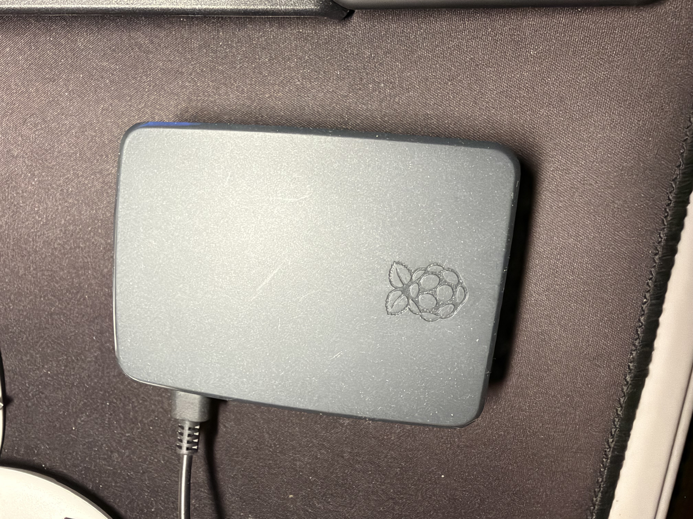

Virtualisation
- Hyper-V
- VMware
- Proxmox
Actuellement en Master of Science Cloud à EPITECH, je développe mes compétences dans les infrastructures informatiques, le réseau et la cybersécurité.
Ce portfolio présente mon parcours, mes compétences et mes projets. Mon objectif est de devenir Architecte Cloud.
Septembre 2026 - Juin 2029
Septembre 2022 - Juin 2024
Septembre 2017 - Juin 2018
Gouvernement de la Polynésie française
Novembre 2022 - Août 2026
Chang Sang Consulting
Janvier 2024 - Février 2024
Électricité de Tahiti
Mai 2023 - Juin 2023

Déploiement de services Docker avec un accès Zero Trust Cloudflare, une authentification centralisée et de la supervision.